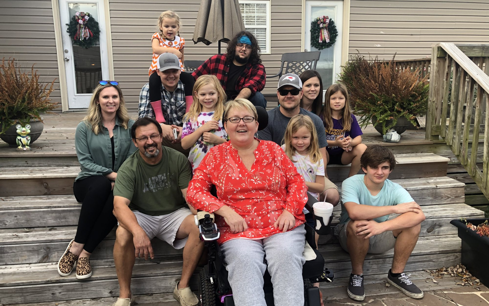

In loving memory
Charlotte Baker
A lifetime Duplin County resident, a Pink Hill business owner, and a big heart for her community.
Charlotte Baker spent her whole life in Duplin County. She ran a business in Pink Hill, and the people who knew her remember the same thing first: she had a big heart, and she used it to help her community.
In 2018, Charlotte was diagnosed with amyotrophic lateral sclerosis, better known as ALS or Lou Gehrig's disease. She faced it with courage, and in 2021 she passed away after a valiant battle.
Throughout her journey, her husband Joe and the family around her saw firsthand what ALS asks of a family: new equipment, changes to the home, mounting costs, and all of it arriving faster than anyone can plan for.
So in September 2021, a group of family and friends decided to do something about it. They started the Charlotte Baker Memorial Fund to honor her, raise awareness of the disease, and make sure the next family facing ALS in our community doesn't face it alone.
“It is our mission to help patients and their families through funds generated by fundraisers and donations from our community.” The Charlotte Baker Memorial Fund

Our journey
One step at a time, together.
From one family's fight to a whole community's cause.
-
2018
A diagnosis
Charlotte is diagnosed with ALS, a progressive disease with no known cure.
-
2021
Forever in our hearts
After a valiant battle, Charlotte passes away, leaving a legacy of kindness in Pink Hill and beyond.
-
Sept
2021Family & friends come together
The Charlotte Baker Memorial Fund begins, determined to help other local families living with ALS.
-
2022
The first fundraisers
The new nonprofit hosts a BBQ cook-off, a co-ed softball tournament and a half-and-half raffle, and the community turns out.
-
2023
$25,000 raised
The Memorial Weekend raises $25,000 to support people living with ALS.
-
2024
A full weekend of events
An ALS Walk-a-Thon, hog cook-off, vendor booths, softball and a raffle fill a weekend in Pink Hill and Albertson.
-
Today
Still walking alongside families
Every gift and every event helps families across eastern North Carolina facing ALS right now.
Be part of her legacy
Walk alongside a family today.
Every gift, raffle ticket and plate of barbecue goes toward helping a local family face ALS with a little less weight on their shoulders.